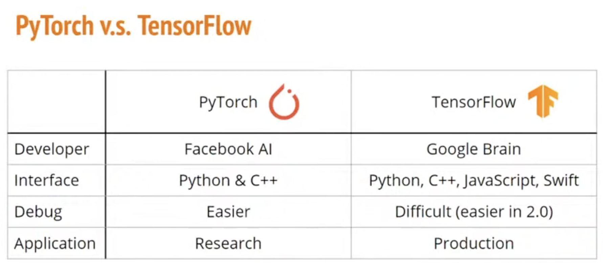
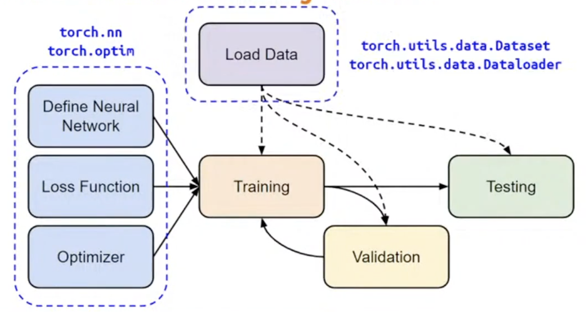
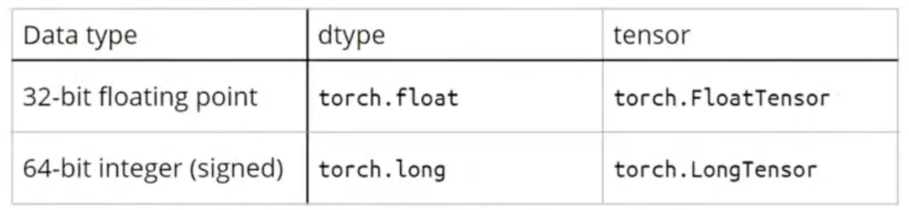
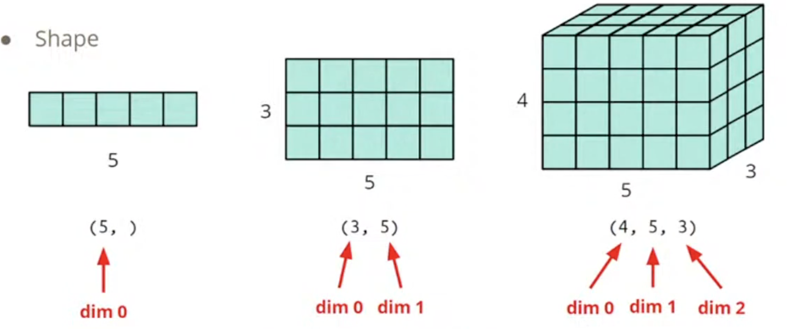

PyTorch-Introduction
Introduction
- An open source machine learning framework
- A Python package that provides two high-level features:
- Tensor computation with strong GPU acceleration
- Deep neural networks built on a tape-based autograd system
- Use the FashionMNIST dataset to train a neural network that predicts if an input image belongs to one of the following classes: T-shirt/top, Trouser, Pullover, Dress, Coat, Sandal, Shirt, Sneaker, Bag, or Ankle boot.

Overview of the DNN Training Procedure

Tensor
High-dimensional matrix(array)
Data Type

shape of Tensor

Constructor
1 | # From list / NumPy array |
Attributes
describe their shape, data type, and the device on which they are stored
1 | tensor = torch.rand(3,4) |
Operators
- move tensor to the GPU if available
1 | if torch.cuda.is_available(): |
- Standard numpy-like indexing and slicing
1 | tensor = torch.ones(4, 4) |
- Joining tensors
1 | # use torch.cat to concatenate a sequence of tensors along a given dimension |
- Arithmetic operations
1 | # This computes the matrix multiplication between two tensors. y1, y2, y3 will have the same value |
- Single-element tensors
1 | # aggregating all values of a tensor into one value |
- In-place operations
1 | # In-place operations save some memory, but can be problematic when computing derivatives because of an immediate loss of history. |
- Squeeze : remove the specified dimension with length = 1
1 | x = torch.zeros([1,2,3]) |
- Unsqueeze: expand a new dimension
1 | x = torch.zeros([2,3]) |
- Bridge with NumPy && Tensor to NumPy array
Tensors on the CPU and NumPy arrays can share their underlying memory locations, and changing one will change the other.
1 | t = torch.ones(5) |